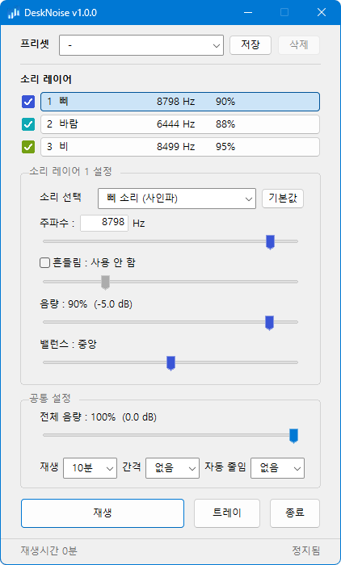

데스크탑 / PC 스피커용 For desktop and PC speakers
환경음 생성기 - 데스크노이즈 Ambient noise generator - DeskNoise
데스크탑 환경에서 일부 사용자들에게 요구되는 노이즈를 원하는 대로 조합해 재생시킬 수 있습니다. 같은 사운드를 재생하는 유튜브 영상을 항상 띄워 놓거나, 모바일 기기의 앱을 사용할 필요가 없습니다. Mix the noise you want on your desktop and play it however you like. No YouTube video left open in a tab, no phone app to reach for.
- 5종류의 소리 및 개별 설정이 가능한 3개의 중첩 레이어 믹스 Five sounds, mixed across three layers
- 원하는 주파수와 대역폭 조절을 손쉽게 조정 Frequency and bandwidth set directly
- 자체 좌우 밸런스 Its own left and right balance
- 재생 주기 지정 또는 음량이 천천히 줄어드는 페이드-아웃 기능 Play on a cycle, or fade the volume out slowly
- 원하는 셋팅을 개별 프리셋으로 저장 Save any setup as its own preset
Space재생 / 정지Play / stop
+ / -전체 음량 조절Master volume
Ctrl+Alt+M윈도우 전역 재생/정지 단축키Global play/stop shortcut, anywhere in Windows

주의사항Notice
DeskNoise는 의료기기가 아니며 질병의 진단이나 치료를 위한 것이 아닙니다.
음량은 편안하게 들리는 정도로 유지해 주세요. 큰 소리로 듣거나 헤드폰, 이어폰으로 오래 사용하면 청력에 부담이 될 수 있습니다.
DeskNoise is not a medical device and is not intended to diagnose or treat any condition.
Please keep the volume at a comfortable level. Listening at high volume for hours — especially through headphones or earbuds — can be hard on your hearing.